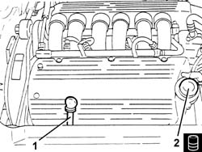
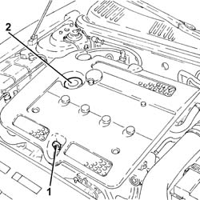
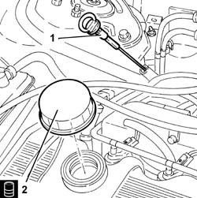

1084A10 ENGINE OIL - Check level and top up, if necessary
- Path
- Procedures > 10 ENGINE > 1084 ENGINE LUBRICATION SYSTEM > 1084A indicators/check devices > 1084A10 ENGINE OIL - Check level and top up, if necessary
- Kind
- repair procedure (removal / refitting; the operation number is the code)
- Applies to
- engines: 1.6 TS , 1.8 TS, 2.0 JTS, 2.5 V6, 3.2 V6, 1.9 JTD 8v , 2.0 JTS, 2.4 JTD 10v; all production periods
- Interactive page
- https://sloeber94.github.io/elrnDB-a156/en/#/3237608
Applies to: all engines; all production periods
Applies to: engines: 2.5 V6; all production periods
1. Using the dipstick, check that the engine oil level is between the MIN and MAX marks on the actual dipstick.
2. If necessary, top up the level introducing the recommended oil after having removed the cap.
 | Type | Component | Name | Qty. |
|---|---|---|---|---|
2 | Oli [l] | ENGINE LUBRICATION CIRCUIT | SELENIA 20K | 5.9 |
For a distinctly sporty performance, use the recommended oil for the lubrication circuit.
| Type | Component | Name | Qty. |
|---|---|---|---|---|
3 | Oli [l] | ENGINE LUBRICATION CIRCUIT | SELENIA RACING | 5.9 |
For the optimum operation of the engine in particularly harsh climatic conditions (temperatures below -20 degrees C), use the recommended oil for the engine lubrication circuit.
| Type | Component | Name | Qty. |
|---|---|---|---|---|
4 | Oli [l] | ENGINE LUBRICATION CIRCUIT | SELENIA PERFORMER | 5.9 |

Applies to: engines: 3.2 V6; all production periods
1. Using the dipstick, check that the engine oil level is between the MIN and MAX marks on the actual dipstick.
2. If necessary, top up the level introducing the recommended oil after having removed the cap.
| Type | Component | Name | Qty. |
|---|---|---|---|---|
2 | Oli [l] | ENGINE LUBRICATION CIRCUIT | SELENIA RACING | 5.9 |
Applies to: engines: 2.5 V6, 3.2 V6; all production periods
Fit the cap.
Let the engine run for several seconds and wait a few minutes after switching it off.
Check the level of the oil once again, then replace the dipstick.
Applies to: engines: 1.6 TS , 1.8 TS; all production periods
Using the dipstick, check that the engine oil level is between the MIN and MAX marks on the dipstick.
If necessary, top up the level introducing the recommended oil after having removed the cap.
| Type | Component | Name | Qty. |
|---|---|---|---|---|
- | Oli [l] | ENGINE LUBRICATION CIRCUIT | SELENIA 20K | 4.4 |
For a distinctly sporty performance, use the recommended oil for the engine lubrication circuit.
| Type | Component | Name | Qty. |
|---|---|---|---|---|
- | Oli [l] | ENGINE LUBRICATION CIRCUIT | SELENIA RACING | 4.4 |
For the optimum operation of the engine in particularly harsh climatic conditions (temperatures below -20 degrees C), use the recommended oil for the engine lubrication circuit.
| Type | Component | Name | Qty. |
|---|---|---|---|---|
- | Oli [l] | ENGINE LUBRICATION CIRCUIT | SELENIA PERFORMER | 4.4 |
Applies to: engines: 1.6 TS , 1.8 TS; all production periods
Let the engine run for several seconds and wait a few minutes after switching it off.
Check the oil level again, then re-insert the dipstick fully.
Applies to: engines: 2.0 JTS, 2.0 JTS; all production periods
1. Using the dipstick, check that the engine oil level is between the MIN and MAX marks on the actual dipstick.
2. If necessary, top up the level introducing the recommended oil after having removed the cap.
| Type | Component | Name | Qty. |
|---|---|---|---|---|
- | Oli [l] | ENGINE LUBRICATION CIRCUIT | SELENIA RACING | 4.2 |

Applies to: engines: 2.0 JTS, 2.0 JTS; all production periods
Fit the cap.
Let the engine run for several seconds and wait a few minutes after switching it off.
Check the level of the oil once again, then replace the dipstick.
Applies to: all engines; all production periods
Applies to: engines: 1.9 JTD 8v ; all production periods
1. Using the dipstick, check that the engine oil level is between the MIN and MAX marks on the dipstick.
2. If necessary, top up the level introducing the recommended oil after having removed the cap.
| Type | Component | Name | Qty. |
|---|---|---|---|---|
2 | Oli [l] | ENGINE LUBRICATION CIRCUIT | SELENIA TURBODIESEL | 4.2 |
For optimum operation of the engine in particularly harsh climatic conditions (temperatures below -15 degrees C), use the recommended oil for the engine lubrication circuit.
| Type | Component | Name | Qty. |
|---|---|---|---|---|
- | Oli [l] | ENGINE LUBRICATION CIRCUIT | SELENIA WR DIESEL | 4.2 |
Applies to: engines: 2.4 JTD 10v; all production periods
1. Using the dipstick, check that the engine oil level is between the MIN and MAX marks on the dipstick.
2. If necessary, top up the level introducing the recommended oil after having removed the cap.
| Type | Component | Name | Qty. |
|---|---|---|---|---|
2 | Oli [l] | ENGINE LUBRICATION CIRCUIT | SELENIA TURBODIESEL | 5.5 |
For optimum operation of the engine in particularly harsh climatic conditions (temperatures below -15 degrees C), use the recommended oil for the engine lubrication circuit.
| Type | Component | Name | Qty. |
|---|---|---|---|---|
- | Oli [l] | ENGINE LUBRICATION CIRCUIT | SELENIA WR DIESEL | 5.5 |

Applies to: engines: 1.9 JTD 8v , 2.4 JTD 10v; all production periods
Fit the cap.
Let the engine run for several seconds and wait a few minutes after switching it off.
Check the oil level once again, then return the dipstick and tighten the cap.
Topics that link to this page (18)
- D30 ENGINE OVERHEATING / WITH THE FAN WORKING
- D35 LOW ENGINE OIL PRESSURE
- W05 WHITE EXHAUST FUMES
- W11 EXCESSIVE EXHAUST FUMES'
- 0010T10 engine oil check level and top up
- 1020A20 crank case oil sump - r + r clean seals for sealant application
- 1020A30 engine oil drain plug - replace
- 1020D10 front crank shaft oil seal cover - r + r and replace seals with timing belt removed
- 1020D12 front crank shaft oil seal cover - r + r and replace seals
- 1084B23 oil pump control return - r r
- 1084B30 engine oil filter r r
- 1084C10 engine oil cooling radiator - r + r
- 1084C10 Engine oil cooling RADIATOR mounting BRACKET - R.R.
- 1084C10 engine oil delivery and return pipes to cooling radiator - r + r
- 1084C10 engine oil heat exchanger - r + r
- 1084C10 Air DUCT for engine oil cooling radiator - R.R .
- 1084C12 Engine oil HEAT EXCHANGER, complete with engine oil filler and filter - R.R.
- 2710A37 oil filter mount/intermediate drive shaft bearing - r+r